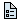

User's Guide
The Buildings library is a free open-source library for modeling of building energy and control systems.
Many models are based on models from the package
Modelica.Fluid and use
the same ports to ensure compatibility with models from that library.
The web page for this library is http://simulationresearch.lbl.gov/modelica. We welcome contributions from different users to further advance this library, whether it is through collaborative model development, through model use and testing or through requirements definition or by providing feedback regarding the model applicability to solve specific problems.
The library has the following User's Guides:
Buildings library
is available at
http://simulationresearch.lbl.gov/modelica/userGuide.
This web site covers general information that is not specific to the
use of individual packages or models.
Discussed topics include
how to get started, best practices, how to post-process results using Python,
work-around for problems and how to develop models.| Airflow.Multizone | Package for multizone airflow and contaminant transport. |
| BoundaryConditions | Package for computing boundary conditions, such as solar irradiation. |
| Fluid | Package for one-dimensional fluid in piping networks with heat exchangers, valves, etc. |
| Fluid.Actuators | Package with valves and air dampers. |
| Fluid.FMI | Package with blocks to export thermofluid flow models as Functional Mockup Units. |
| Fluid.HeatExchangers.DXCoils | Package with direct evaporative cooling coils. |
| Fluid.HeatExchangers.RadiantSlabs | Package with radiant slabs. |
| Fluid.Movers | Package with fans and pumps. |
| Fluid.Sensors | Package with sensors. |
| Fluid.Storage | Package with storage tanks and an expansion vessel. |
| Fluid.SolarCollectors | Package with solar collectors. |
| Fluid.Interfaces | Base models that can be used by developers to implement new models. |
| HeatTransfer | Package for heat transfer in building constructions. |
| Rooms.MixedAir | Package for heat transfer in rooms and through the building envelope with the room air being modeled using the mixed air assumption. |
| Rooms.CFD | Package for heat transfer in rooms and through the building envelope with the room air being modeled using computational fluid dynamics. |
| Rooms.Examples.FFD | Package with examples that use the Fast Fluid Dynamics program for the computational fluid dynamics. |
| Utilities.IO.Python27 | Package to call Python functions from Modelica. |
Extends from Modelica.Icons.Information (Icon for general information packages).
| Name | Description |
|---|---|
| Conventions | |
|  ReleaseNotes | Release notes |
| Contact | Contact |
| Acknowledgements | |
| Modelica License 2 | |
| Copyright |
Conventions
This library follows the conventions of the Modelica Standard Library, which are as follows:
Note, in the html documentation of any Modelica library, the headings "h1, h2, h3" should not be used, because they are utilized from the automatically generated documentation and headings. Additional headings in the html documentation should start with "h4".
In the Modelica package the following conventions are used:
The Buildings library uses the following conventions
in addition to the ones of the Modelica Standard Library:
X denotes mass fraction per total mass.
x denotes mass fraction per mass of dry air.
z_xy denotes that the function or block has output
z and inputs x and y.
pW denotes water vapor pressure, TDewPoi
denotes dew point temperature, TWetBul denotes wet bulb temperature,
and TDryBul (or simply T) denotes dry bulb temperature.
HeatTransfer.
T
for temperature and p for pressure, or a combination of the first three
characters of a word, such as higPreSetPoi for high pressure set point.
Beta.
Extends from Modelica.Icons.Information (Icon for general information packages).
Contact
The development of the Buildings library is organized by
Michael Wetter
Lawrence Berkeley National Laboratory (LBNL)
One Cyclotron Road
Bldg. 90-3147
Berkeley, CA 94720
USA
email: MWetter@lbl.gov
Extends from Modelica.Icons.Contact (Icon for contact information).
 Buildings.UsersGuide.Acknowledgements
Buildings.UsersGuide.AcknowledgementsAcknowledgements
The development of this library was supported
The package for multizone airflow modeling and the model for thermal comfort was contributed by the United Technologies Research Center, which also contributed to the validation of the room heat transfer model.
We thank Dietmar Winkler from Telemark University College for the various feedback that helped improve the organization and structure of the library.
The following people have directly contributed to the implementation of the Buildings library (many others have contributed by other means than model implementation):
Extends from Modelica.Icons.Information (Icon for general information packages).
Buildings.UsersGuide.LicenseModelica License 2
Preamble. The goal of this license is that Modelica related model libraries, software, images, documents, data files etc. can be used freely in the original or a modified form, in open source and in commercial environments (as long as the license conditions below are fulfilled, in particular sections 2c) and 2d). The Original Work is provided free of charge and the use is completely at your own risk. Developers of free Modelica packages are encouraged to utilize this license for their work.
The Modelica License applies to any Original Work that contains the following licensing notice adjacent to the copyright notice(s) for this Original Work:
Note. This is the standard Modelica License 2, except for the following changes: the parenthetical in paragraph 7., paragraph 5., and the addition of paragraph 15.d).
Licensed by The Regents of the University of California, through Lawrence Berkeley National Laboratory under the Modelica License 2
Licensor grants You a worldwide, royalty-free, non-exclusive, sublicensable license, for the duration of the copyright, to do the following:
Any use of the Original Work or a Derivative Work, or any action according to either Section 2a) to 2f) above constitutes Your acceptance of this License.
The identifying designation of Derivative Work and of Modified Work must be different to the corresponding identifying designation of the Original Work. This means especially that the (root-level) name of a Modelica package under this license must be changed if the package is modified (besides fixing of errors, adding vendor specific Modelica annotations, using a subset of the classes of a Modelica package, or using another representation, e.g. a binary representation).
Licensor agrees to provide You with a copy of the Source Code of the Original Work but reserves the right to decide freely on the manner of how the Original Work is provided. For the matter of clarity, Licensor might provide only a binary representation of the Original Work. In that case, You may (a) either reproduce the Source Code from the binary representation if this is possible (e.g., by performing a copy of an encrypted Modelica package, if encryption allows the copy operation) or (b) request the Source Code from the Licensor who will provide it to You.
Neither the names of Licensor (including, but not limited to, University of California, Lawrence Berkeley National Laboratory, U.S. Dept. of Energy, UC, LBNL, LBL, and DOE), nor the names of any contributors to the Original Work, nor any of their trademarks or service marks, may be used to endorse or promote products derived from this Original Work without express prior permission of the Licensor. Except as otherwise expressly stated in this License and in particular in Sections 2 and 5, nothing in this License grants any license to Licensor's trademarks, copyrights, patents, trade secrets or any other intellectual property, and no patent license is granted to make, use, sell, offer for sale, have made, or import embodiments of any patent claims. No license is granted to the trademarks of Licensor even if such trademarks are included in the Original Work, except as expressly stated in this License. Nothing in this License shall be interpreted to prohibit Licensor from licensing under terms different from this License any Original Work that Licensor otherwise would have a right to license.
You must retain in the Source Code of the Original Work and of any Derivative Works that You create, all author, copyright, patent, or trademark notices, as well as any descriptive text identified therein as an "Attribution Notice". The same applies to the licensing notice of this License in the Original Work. For the matter of clarity, "author notice" means the notice that identifies the original author(s).
You must cause the Source Code for any Derivative Works that You create to carry a prominent Attribution Notice reasonably calculated to inform recipients that You have modified the Original Work.
In case the Original Work or Derivative Work is not provided in Source Code, the Attribution Notices shall be appropriately displayed, e.g., in the documentation of the Derivative Work.
The Original Work is provided under this License on an "as is" basis and without warranty, either express or implied, including, without limitation, the warranties of non-infringement, merchantability or fitness for a particular purpose. The entire risk as to the quality of the Original Work is with You. This disclaimer of warranty constitutes an essential part of this License. No license to the Original Work is granted by this License except under this disclaimer.
Under no circumstances and under no legal theory, whether in tort (including negligence), contract, or otherwise, shall the Licensor, the owner or a licensee of the Original Work be liable to anyone for any direct, indirect, general, special, incidental, or consequential damages of any character arising as a result of this License or the use of the Original Work including, without limitation, damages for loss of goodwill, work stoppage, computer failure or malfunction, or any and all other commercial damages or losses. This limitation of liability shall not apply to the extent applicable law prohibits such limitation.
This License conditions your rights to undertake the activities listed in Section 2 and 5, including your right to create Derivative Works based upon the Original Work, and doing so without observing these terms and conditions is prohibited by copyright law and international treaty. Nothing in this License is intended to affect copyright exceptions and limitations. This License shall terminate immediately and You may no longer exercise any of the rights granted to You by this License upon your failure to observe the conditions of this license.
This License shall terminate automatically and You may no longer exercise any of the rights granted to You by this License as of the date You commence an action, including a cross-claim or counterclaim, against Licensor, any owners of the Original Work or any licensee alleging that the Original Work infringes a patent. This termination provision shall not apply for an action alleging patent infringement through combinations of the Original Work under combination with other software or hardware.
Any action or suit relating to this License may be brought only in the courts of a jurisdiction wherein the Licensor resides and under the laws of that jurisdiction excluding its conflict-of-law provisions. The application of the United Nations Convention on Contracts for the International Sale of Goods is expressly excluded. Any use of the Original Work outside the scope of this License or after its termination shall be subject to the requirements and penalties of copyright or patent law in the appropriate jurisdiction. This section shall survive the termination of this License.
In any action to enforce the terms of this License or seeking damages relating thereto, the prevailing party shall be entitled to recover its costs and expenses, including, without limitation, reasonable attorneys' fees and costs incurred in connection with such action, including any appeal of such action. This section shall survive the termination of this License.
At the top level of your Modelica package and at every important subpackage, add the following notices in the info layer of the package:
Include a copy of the Modelica License 2 under <library>.UsersGuide.ModelicaLicense2 (use http://www.modelica.org/modelica-legal-documents/ModelicaLicense2.mo) Furthermore, add the list of authors and contributors under <library>.UsersGuide.Contributors or <library>.UsersGuide.Contact
For example, sublibrary Modelica.Blocks of the Modelica Standard Library may have the following notices:
For C-source code and documents, add similar notices in the corresponding file.
For images, add a "readme.txt" file to the directories where the images are stored and include a similar notice in this file.
In these cases, save a copy of the Modelica License 2 in one directory of the distribution, e.g., http://www.modelica.org/modelica-legal-documents/ModelicaLicense2-standalone.html in directory <library>/help/documentation/ModelicaLicense2.html.
Extends from Modelica.Icons.Information (Icon for general information packages).
Buildings.UsersGuide.CopyrightCopyright
Copyright (c) 2009-2015, The Regents of the University of California, through Lawrence Berkeley National Laboratory (subject to receipt of any required approvals from the U.S. Dept. of Energy). All rights reserved.
If you have questions about your rights to use or distribute this software, please contact Berkeley Lab's Technology Transfer Department at TTD@lbl.gov
NOTICE. This software was developed under partial funding from the U.S. Department of Energy. As such, the U.S. Government has been granted for itself and others acting on its behalf a paid-up, nonexclusive, irrevocable, worldwide license in the Software to reproduce, prepare derivative works, and perform publicly and display publicly. Beginning five (5) years after the date permission to assert copyright is obtained from the U.S. Department of Energy, and subject to any subsequent five (5) year renewals, the U.S. Government is granted for itself and others acting on its behalf a paid-up, nonexclusive, irrevocable, worldwide license in the Software to reproduce, prepare derivative works, distribute copies to the public, perform publicly and display publicly, and to permit others to do so.
Extends from Modelica.Icons.Information (Icon for general information packages).